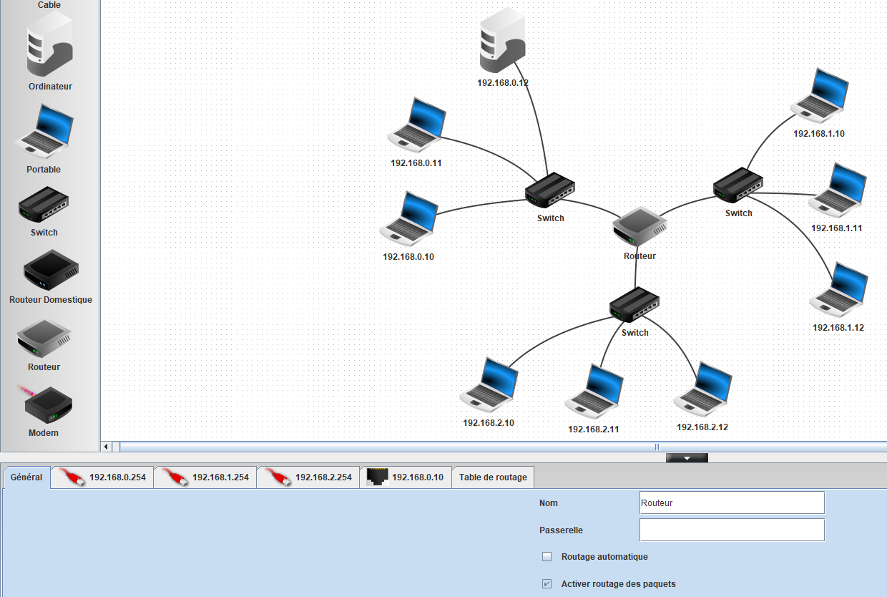
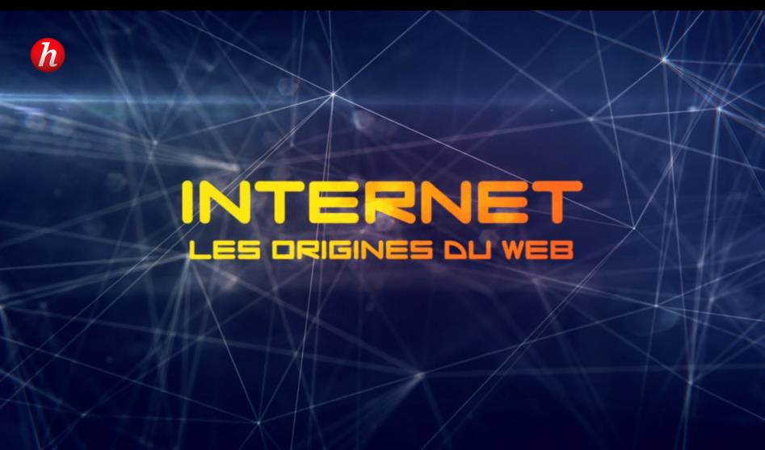

Comprendre le fonctionnement d’Internet.
Internet : protocoles, adressage et architecture
| Contenus | Capacités attendues |
|---|---|
| Protocole TCP/IP : paquets, routage des paquets |
Distinguer le rôle des protocoles IP et TCP. Caractériser les principes du routage et ses limites. Distinguer la fiabilité de transmission et l'absence de garantie temporelle. |
| Adresses symboliques et serveurs DNS |
Sur des exemples réels, retrouver une adresse IP à partir d'une adresse symbolique et inversement. |
| Réseaux pair-à-pair |
Décrire l'intérêt des réseaux pair-à-pair ainsi que les usages illicites qu'on peut en faire. |
| Indépendance d'internet par rapport au réseau physique |
Caractériser quelques types de réseaux physiques : obsolètes ou actuels, rapides ou lents, filaires ou non. Caractériser l'ordre de grandeur du trafic de données sur internet et son évolution. |

Les neufs activités
Internet et les origines du Web
Cette vidéo nous introduit aux origines de l’Internet ainsi qu’au Web. En dehors de l'intérêt historique, elle nous permet de comprendre les enjeux technologiques, sociétaux et économiques autour de la maîtrise des réseaux interconnectés de communication à l'échelle mondiale et de ses implications à l'échelle de l'humanité.
